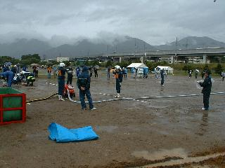
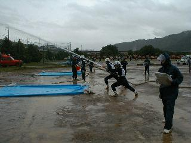
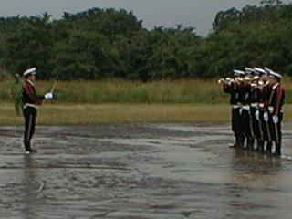
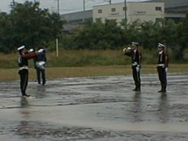
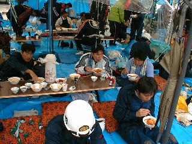

| トピックス |
出場各チームとも健闘
～上田市消防団ポンプ操法大会・ラッパ吹奏大会～
平成１１年６月２７日（日）
|  |
| ６月２７日（日）、上田市の上堀グラウンドにおいて上田市消防団第４４回ポンプ操法大会が行われました。当分団からは第二部（小型ポンプの部）に西前山班、第一自動車班の２班が出場しました。 |
|  |
| これだけの土砂降り雨は一年に一度あるかどうかというような悪天候の中、出場各チームは持てる力を精一杯に振り絞りました。 |
|  |
| 同時に、上田市消防団第２２回ラッパ吹奏大会も行われました。ラッパは水に濡れると音を出すことすら困難になります。こんな悪条件の中でしたが、課題曲の「国旗に対する敬礼」と自由曲の「速足行進Ｎｏ．１」の２曲を最後まで吹ききることができました。 |
|  |
| 個人の部には武田、安藤の両団員が出場しました。たった一人で吹く「速足行進Ｎｏ．１」。審査員と大勢の応援団に囲まれ、選手の緊張は極限に達していたことでしょう。 |
|  |
| 選手が安心して競技に臨めるのも、役員、ＯＢ、自治会、そして多くの同僚による厚い支援があってからこそです。「消防団」という同じ仲間が、ひとつの目標に向かって一生懸命立ち向かう・・・。訓練は過酷で、ときには逃げ出したい気分に陥りがちですが、支えてくれた方のため、そして誰よりも自己鍛錬のため、選手は精一杯の力を出しきります。選手たちが競技を終えて得る満足感は、きっと何物にも替え難いことでしょう。 |
このページの最終更新日：2001/01/22